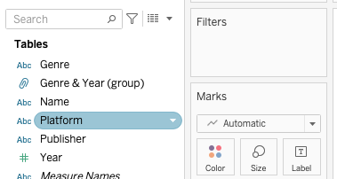

?teacher=1 בכתובת הדף: מה לומר, איפה לעצור ומה לבדוק לפני שממשיכים.מתחיליםבונים במודול הזה לומדים לשלוט במה שרואים בתצוגה: מה נשאר, באיזה סדר, ובאילו קבוצות. בסוף תהיה לכם תצוגה של 3 הסניפים המובילים באזור מסוים, שנבנתה נכון, ותבינו למה אותה תצוגה נבנית לפעמים לא נכון.
מה צריך מוכן: Tableau Public (Desktop Public Edition) עם הקובץ scoop_sales_2024_2025.csv טעון (מודול 2), ושידעו להניח ממדים ומדדים על Columns ו-Rows (מודול 3). הנתונים בדויים: Scoop & Go, רשת גלידריות עם 9 סניפים ו-6,575 שורות. ואם פתחתם במודול 1 את חוברת הקורס scoop-course.twbx, עבדו בתוכה: בסוף המודול נוסיף לה גיליון אחד ששווה לשמור.
כל התרגילים במודול רצים ב-Tableau Public בלבד. מה שמסומן כאן ״להכרה״ לא נדרש באף תרגיל. אם אתם עובדים ב-Web Authoring (בדפדפן) במקום באפליקציה, הרעיונות זהים, אבל חלק מהתפריטים נראים אחרת, וייתכן שסטים עם תנאי ויצירת היררכיות לא זמינים שם. אם משהו חסר אצלכם, עברו לאפליקציה.
מסננים: מה נשאר בתצוגה
ההנהלה של Scoop & Go שואלת בבוקר אחד שלוש שאלות. מה קורה רק בדרום? מה קרה רק בקיץ של 2025? ומי חמשת המוצרים המובילים? כל אחת מהשאלות האלה היא מסנן.
Filter): כלל שקובע אילו שורות או אילו סימנים נשארים בתצוגה, והשאר פשוט נעלמים ממנה. דוגמה: Region = South משאיר 3 סניפים מתוך 9, וסכום המכירות יורד מ-236,820.9 ל-55,575.4.| Branch | Region | SUM(Sales) | אחרי Region = South |
|---|---|---|---|
| Tel Aviv Dizengoff | Center | 44,194.1 | נעלם |
| Tel Aviv Port | Center | 39,446.0 | נעלם |
| Jerusalem Mamilla | Jerusalem | 33,450.8 | נעלם |
| Eilat Promenade | South | 31,473.7 | נשאר |
| Haifa German Colony | North | 27,389.2 | נעלם |
| Netanya Beach | Center | 26,840.2 | נעלם |
| Beer Sheva Grand Mall | South | 18,797.2 | נשאר |
| Rehovot Mall | Center | 9,925.2 | נעלם |
| Ashdod Beach Pop-up | South | 5,304.5 | נשאר |
איפה מסנן גר
במסך של Tableau יש מדף שנקרא Filters. הוא יושב מעל כרטיס Marks, בצד שמאל של הגיליון. כל מסנן הוא פיל (pill) על המדף הזה.

Filters ריק, מעל Marks. בצילום נתונים של משחקי וידאו, אצלכם יופיעו שדות של Scoop & Go. שימו לב לשדה עם סמל האטב בחלונית הנתונים: זו קבוצה (Group), נגיע אליה בהמשך.יש שלוש דרכים להוסיף מסנן, ושלושתן מגיעות לאותו מקום:
- גוררים שדה מחלונית הנתונים אל המדף
Filters. נפתח חלון סינון. - לוחצים קליק ימני על פיל שכבר נמצא בתצוגה ובוחרים
Filter.... - קליק ימני על פיל שכבר נמצא בתצוגה (למשל על
Columnsאו עלFilters), ואזShow Filter: מופיע כרטיס סינון בצד התצוגה, ודרכו משנים את המסנן (על כרטיסים נדבר בסעיף 4).
חמישה סוגי מסננים ומה בכל אחד
| סוג | מסנן על מה | דוגמה ב-Scoop & Go | איפה במודול |
|---|---|---|---|
| מסנן ממד | ערכים של שדה טקסט: רשימה, תבנית, תנאי, Top N | Region = South | סעיף 2 |
| מסנן מדד | טווח של מספר: לכל שורה או לסכום | SUM(Sales) >= 30000 | סעיף 3 |
| מסנן תאריך | טווח, תקופה יחסית או חלק מתאריך | יוני עד אוגוסט 2025 | סעיף 3 |
| מסנן הקשר (Context) | מסנן ממד שרץ ראשון ומשמש בסיס לכל השאר | Region = Center לפני Top 3 | סעיף 9 |
| מסנן Extract ומסנן Data Source | הנתונים עצמם, עוד לפני הגיליון | רק שנת 2025 בכל הקובץ | סעיף 10 (להכרה) |
- בגיליון חדש גררו Sales אל
Columnsו-Branch אלRows. למה: עמודות אופקיות עם שם סניף בכל שורה, קל לקרוא שמות ארוכים. - בשורת המצב בתחתית החלון (status bar) קראו את מספר הסימנים והסכום. למה: זו נקודת הפתיחה, כדי שתראו מה משתנה אחרי הסינון.
- גררו Region אל
Filters. בחלון שנפתח לחצוNone(הסרת הכל), סמנו רקSouth, ולחצוOK. למה: בחרנו את הערכים שנשארים.Noneואז סימון אחד מהיר יותר מהסרה של שלושה. - קראו שוב את שורת המצב. למה: לבדוק שהמסנן עשה מה שחשבתם.
תוצאה צפויה: לפני הסינון 9 סימנים וסכום 236,820.9. אחרי הסינון 3 סימנים: Eilat Promenade 31,473.7, Beer Sheva Grand Mall 18,797.2, Ashdod Beach Pop-up 5,304.5, וסכום כולל 55,575.4. בשורת המצב (Tableau מעגל שם לשקל, וזה עיגול תצוגה בלבד), לפני ואחרי:
רוצים להרגיש את זה לפני שפותחים את התוכנה? זה הדגם שלנו ל-Tableau, על אותם נתונים. הוא לא Tableau עצמו אבל החוקים דומים.
מסלול מקביל למדריך הרשמי. המדריך הרשמי של Tableau (Get Started) עובד על Sample - Superstore, קובץ שמגיע עם התוכנה: במסך הפתיחה, תחת Saved Data Sources. בשלב 3 שלו (״Focus״) הוא שם את Profit על Color עם פלטה מתפצלת (צבע אחד להפסד וצבע אחר לרווח), ואז קליק ימני על הפילים של Order Date ושל Sub-Category ו-Show Filter, כדי שיהיו שני כרטיסי סינון. בדיקה עצמית על הקובץ שמותקן אצלכם: Sub-Category על Rows, Profit על Columns, בלי מסננים. צריכות להופיע שלוש תתי-קטגוריות בהפסד (בטולטיפ המספרים מעוגלים):
בקובץ שמגיע עם התוכנה השנים הן 2023 עד 2026, ולכן בדפי המדריך הרשמי ייתכן שתראו שנים אחרות.
מסנן משנה את השאלה, לא רק את התמונה. אחרי Region = South כל מספר בגיליון הוא מספר של הדרום בלבד. מי שרואה את הגיליון ולא רואה את המסנן יחשוב שזה המספר של כל הרשת. לכן כותבים בכותרת מה מסונן, או מציגים את כרטיס הסינון.
מסנן הוא לא מחיקה. ב-Tableau Public הנתונים של הגיליון יושבים בתוך הקובץ ששמרתם, ובדרך כלל כל אחד יכול להוריד את התצוגה ואת הנתונים שמאחוריה. אם משהו לא אמור להיות פומבי, לא מסתירים אותו במסנן. מסירים אותו מקובץ המקור לפני שטוענים. (לפי השאלות הנפוצות של Tableau Public; נכון לאוקטובר 2026, בדקו בתיעוד.)
מנהלת שיווק מתקשרת: ״המספר בדשבורד של הדרום נמוך מהמספר שאני מכירה״. אילו שלוש שאלות על מסננים תשאלו לפני שתבדקו את הנתונים?
התצוגה היא SUM(Sales) לפי Branch, עם 9 סימנים. מוסיפים מסנן Region = South. כמה סימנים נשארים?
מנהל ביקש ממכם להסתיר ממשתמשי הדשבורד הציבורי את נתוני סניף הפופ-אפ באשדוד. הפתרון הנכון?
Show Filter נמצא בתפריט של הפיל (קליק ימני על פיל בתצוגה או על המדף Filters). מי שעובד במקביל עם המדריך הרשמי של Tableau יכול להשתמש בתיבה ״מסלול מקביל״: Sample - Superstore כבר מותקן עם התוכנה.מסנן על ממד: ארבע לשוניות
בקשה ממנהלת הרשת: ״תראו לי רק את המוצרים עם המילה Cup בשם. ואז רק את אלה שמכרו מעל 16,000. ואז רק את חמשת הראשונים.״ שלוש בקשות, ושלוש לשוניות שונות באותו חלון.
כשגוררים ממד (למשל Item) אל Filters, נפתח חלון עם ארבע לשוניות: General, Wildcard, Condition ו-Top. זה החלון האמיתי:
![חלון Filter [Genre] עם לשוניות General, Wildcard, Condition, Top, רשימת ערכים עם תיבות סימון, כפתורי All ו-None, תיבת Exclude ואזור Summary](img/filter-dialog.png)
Filter של ממד. בצילום השדה Genre ממשחקי וידאו, אצלכם יופיע Item או Branch. למטה אזור Summary: הוא מראה מה פעיל בכל לשונית.General: בוחרים מרשימה
שלוש אפשרויות: Select from list (מסמנים ערכים), Custom value list (מקלידים רשימה משלכם) ו-Use all (הכל, ובעתיד גם ערכים חדשים). הכפתורים All ו-None מסמנים או מנקים את כל הרשימה.
Wildcard: מתאימים תבנית טקסט
מקלידים מילה ובוחרים איך להתאים: Contains (מכיל), Starts with (מתחיל ב-), Ends with (נגמר ב-) או Exactly matches (בדיוק). מתאים כשהרשימה ארוכה.
Condition: בוחרים לפי תנאי על מספר
״רק פריטים שהסכום שלהם גדול מ-...״. אפשר By field: (שדה, אגרגציה, אופרטור, ערך) או By formula: (נוסחה שאתם כותבים).
Top: N הראשונים או האחרונים
By field: בוחרים Top או Bottom, כמה, לפי איזה שדה ואיזו אגרגציה. בצילום למטה: Bottom 5 לפי JP Sales, Sum.

Top אחרי מילוי: Bottom, 5, לפי JP Sales עם Sum. הנתונים בצילום ממשחקי וידאו.ככה נראות שתי הלשוניות האחרות (הדמיה סכמטית של החלון):
General שהופכת את הבחירה: הערכים המסומנים הם אלה שמסירים, וכל השאר נשאר. דוגמה: מסמנים רק Ashdod Beach Pop-up ולוחצים Exclude, ונשארים 8 סניפים.למה זה חשוב? כשרוצים להוריד ערך אחד מרשימה ארוכה, Exclude חוסך לסמן את כל השאר. ולפי מדריכים מקובלים, כשהנתונים מתעדכנים ומגיעים ערכים חדשים, מסנן שמוציא ערכים מסוימים ממשיך להציג את החדשים, ומסנן שבוחר ערכים לא מציג אותם. ב-Tableau Public הקובץ שלכם נשאר אותו קובץ, אז זה פחות משנה, אבל כדאי להכיר.
עכשיו נסו בעצמכם, על 15 המוצרים של הרשת. בחרו לשונית, שנו את ההגדרות, וראו מי נשאר.
הדמיה. הסכומים מחושבים מנתוני Scoop & Go האמיתיים. בהדמיה התאמת טקסט לא מבחינה באותיות גדולות וקטנות; בדקו מה קורה בגרסה שלכם.
- בגיליון חדש: Sales אל
Columns, Item אלRows. למה: עמודה לכל מוצר, 15 סימנים. - גררו Item אל
Filters, עברו ללשוניתWildcard, הקלידוCup, בחרוContainsו-OK. למה: כל השמות שמכילים Cup, בלי לסמן ידנית. - בדקו את שורת המצב ואת העמודות. אחר כך הסירו את המסנן (גררו את הפיל החוצה מ-
Filters, או Ctrl+Z / Cmd+Z). למה: כל לשונית נבדקת בנפרד, בלי שהמסננים יתערבבו. - גררו שוב Item אל
Filters, לשוניתCondition,By field:Sales,Sum,>=,16000. למה: התנאי נבדק על הסכום של כל מוצר, לא על שורה בודדת. - הסירו את המסנן וגררו שוב. הפעם לשונית
Top:By field:,Top,5,Sales,Sum. למה: לראות שהלשונית הזו משאירה בדיוק 5, בלי קשר לסף.
תוצאה צפויה: (א) Contains Cup: 4 סימנים, Pistachio Cup 20,532.0, Vanilla Cup 17,006.0, Chocolate Cup 16,288.0, Lemon Sorbet Cup 15,644.0. (ב) Sum >= 16000: 6 סימנים: Milkshake, Pistachio Cup, Double Cone, Vanilla Cup, Chocolate Cup, Iced Coffee. (ג) Top 5: 5 סימנים, חמשת הראשונים מהרשימה של (ב), בלי Iced Coffee. שימו לב: ב-(ב) ו-(ג) התוצאות נבדלות בסימן אחד, כי Iced Coffee (16,281.0) עובר את סף 16,000 אבל הוא רק שישי.
שלוש הלשוניות עונות על שלוש שאלות שונות. Wildcard שואלת ״איך השם נראה?״. Condition שואלת ״כמה הוא מכר?״ ומשאירה כל מי שעבר את הסף, בלי הגבלה על המספר. Top שואלת ״מי ראשון?״ ומשאירה בדיוק N. כשהמנהלת אומרת ״הטובים״, שאלו אותה איזו מהשלוש היא מתכוונת.
אלה כלים שאתם מכירים. ב-Excel, סינון טקסט > מכיל הוא Wildcard. ב-SQL, WHERE Item LIKE '%Cup%' הוא אותו דבר, ו-HAVING SUM(Sales) >= 16000 הוא Condition. ו-ORDER BY ... LIMIT 5 הוא Top. (ל-SQL שלכם בחלק 2 של השיעור המסכם.)
ממד שמסננים לפי מספר: ב-Condition ו-Top הסינון הוא על ממד, אבל התנאי הוא על סכום. אם בגרירת Item אתם בוחרים Condition עם Sales, אתם לא מסננים שורות בודדות של מכירה, אלא מוצרים שהסכום שלהם עבר. כדי לסנן שורות בודדות, מסננים את Sales עצמו כמדד (סעיף 3).
במסנן על Item, מה יעשה Wildcard > Contains > Cup למוצר Double Cone?
מה ההבדל בין Condition: Sum of Sales >= 16000 לבין Top 5 by Sum of Sales על מוצרי הרשת?
מסמנים רק Ashdod Beach Pop-up בלשונית General ומפעילים Exclude. מה יוצג?
General, Wildcard, Condition, Top, ולמטה אזור Summary. הראו שעורכים מסנן קיים בקליק ימני על הפיל ב-Filters ובחירת Edit Filter.... פתוח לבדיקה מול הכיתה: מה Summary כותב כשמגדירים שתי לשוניות באותו מסנן.מסנן על מדד ומסנן על תאריך
שתי בקשות חדשות מהרשת. ״רק סניפים שמכרו מעל 30,000״, וגם ״רק הקיץ של 2025״. הראשונה מסננת מספר, והשנייה מסננת תאריך. בשתיהן יש שאלה אחת שקובעת הכל: מה בדיוק נבדק?
Measure filter): מסנן שבודק מספר ולא טקסט. הוא יכול לבדוק כל שורה בנפרד, או סכום (או ממוצע וכו׳) של כל סימן. דוגמה: Sales >= 100 על שורה בודדת, מול SUM(Sales) >= 30000 על סניף שלם.כשגוררים מדד אל Filters, Tableau קודם שואל איך לצבור אותו, ורק אחר כך שואל על הטווח. ככה זה נראה (הדמיה סכמטית):
Average
Median
Count
Count (Distinct)
Minimum
Maximum
Std. Dev
Variance
All Values
הרשימה בצד שמאל היא איך Tableau צובר לפני שהוא בודק. All Values אומר: בדוק את השורות עצמן, בלי לצבור. כל השאר אומרים: צבור קודם, ובדוק את התוצאה. כותרת החלון הראשון היא Filter Field [Sales], ובחלון השני יש ארבעה מצבים: Range of values, At least, At most ו-Special (לערכים ריקים).
שורה או סכום: אותה בקשה, שלוש תוצאות
נשים Branch על Rows ו-Sales על Columns, ונסנן בשלוש דרכים:
| הגדרת המסנן | מה נבדק | מה נשאר |
|---|---|---|
Sales עם All Values, לפחות 100 | כל שורת מכירה בנפרד | 9 סניפים, אבל כל סניף מראה רק שורות של 100 ומעלה: סך הכל 195 שורות ו-23,179.8. דוגמאות: Port 4,380.4, Eilat 4,030.8, Ashdod 754.0 |
Sum של Sales, לפחות 100 | הסכום של כל סניף | כל 9 הסניפים, עם הסכום המלא שלהם (Port 39,446.0), כי כל סניף עובר 100 בקלות |
Sum של Sales, לפחות 30000 | הסכום של כל סניף | 4 סניפים: Dizengoff 44,194.1, Port 39,446.0, Mamilla 33,450.8, Eilat 31,473.7 |
שימו לב: הסימן הראשון משנה גם את המספרים של כל סניף (כי חלק מהשורות נעלמו), והשני והשלישי רק מחליטים מי נשאר.
לפני שמוסיפים מסנן על מדד, שאלו ״על מה אני שואל: על שורה או על סימן?״. ״מכירה בודדת מעל 100״ היא שאלה על שורות. ״סניף שמכר מעל 30,000״ היא שאלה על סימנים. אם בוחרים לא נכון, הגרף נראה תקין ועונה על שאלה אחרת.
זה אותו הבדל כמו ב-SQL. מסנן שבודק שורות הוא WHERE Sales >= 100. מסנן שבודק סכום הוא GROUP BY Branch HAVING SUM(Sales) >= 30000. התיעוד של Tableau עצמו משווה: מסנני מדד מקבילים ל-HAVING, ומסנני ממד ל-WHERE. (בחלק 2 של השיעור המסכם כתבתם שניהם.)
מסנן תאריך: שלוש משפחות
תאריך הוא שדה מיוחד, ולכן כשגוררים אותו אל Filters הבחירה הראשונה היא איזה סוג מסנן רוצים (הדמיה סכמטית; שמות האפשרויות כמו בתוכנה):
Range of Dates
Years
Quarters
Months
...
Individual Dates
...
| סוג | איך מגדירים | דוגמה | מתי מתאים |
|---|---|---|---|
Relative Dateתאריך יחסי | תקופה ביחס לנקודת עוגן (ברירת מחדל: היום) | ״3 החודשים האחרונים״ | דשבורד שמתעדכן כל הזמן |
Range of Datesטווח תאריכים | תאריך התחלה ותאריך סיום | 2025-06-01 עד 2025-08-31 | תקופה קבועה, כמו עונה |
| חלקי תאריך (שנה, רבעון, חודש...) | מסמנים ערכים מרשימה, כמו בממד | Year = 2025; Month = Jun, Jul, Aug | כשרוצים לבחור במפורש, ואולי לא ברצף |
״התאריך היחסי ריק״. תאריך יחסי נמדד כברירת מחדל מ-היום. הנתונים של Scoop & Go נגמרים ב-2025-12-31. מסנן כמו ״3 החודשים האחרונים״ ייתן תצוגה ריקה או חלקית, כי אחרי התאריך הזה אין נתונים. בחלון של Relative Date יש אפשרות Anchor relative to (עוגן יחסית ל-), ושם בוחרים תאריך עוגן אחר: היום האחרון בנתונים, 2025-12-31.
חודש שמופיע פעמיים. אם מסמנים Jun, Jul, Aug ברשימת חודשים (חלק תאריך), מקבלים את שלושת החודשים של כל השנים בקובץ ביחד. אצלנו: 46,269.4 מ-2024 ועוד 59,625.9 מ-2025, סך הכל 105,895.3. מי שרוצה את קיץ 2025 בלבד צריך גם Year = 2025, או טווח תאריכים אחד.
- גיליון חדש: Category אל
Columns, Sales אלRows. למה: חמישה עמודות, הבסיס להשוואה. - גררו Order Date אל
FiltersובחרוRange of Dates,Next. הקלידו 2025-06-01 עד 2025-08-31 ו-OK. למה: עונה אחת בדיוק, בלי תלות בשאר השנה. - קראו את הערכים (העבירו עכבר על עמודות, או
Show Mark Labelsבסרגל הכלים). אחר כך הסירו את המסנן. למה: לרשום את התוצאה לפני שמשווים לדרך הבאה. - גררו שוב את Order Date אל
Filters, הפעם בחרוYearsוסמנו רק2025. למה: הבדל בין טווח לבין חלק תאריך. - הסירו, וגררו שוב:
Months, סמנו רקJune,July,August. למה: לראות בעיניים את החודשים שנאספים משתי השנים.
תוצאה צפויה: (שלב 2) סך הכל 59,625.9, מתוך 1,697 שורות: Cups 17,426.8, Drinks 13,846.7, Cones 12,542.6, Sundaes 11,513.0, Sticks 4,296.8. (שלב 4) כל 2025: 129,773.3, ו-Cups 37,767.6. (שלב 5) יוני עד אוגוסט של שתי השנים: 105,895.3, ו-Cups 31,707.2. Tableau עשוי להציג את הסכומים מעוגלים לשקל, וזה עיגול תצוגה בלבד.
בהדמיה אפשר לבחור שנים וגם טווח תאריכים. מה שצפוי כשרק 2025 נבחרת: סך הכל 129,773.3.
מנהל הסניף באילת רוצה דשבורד ש״תמיד מראה את החודש האחרון״. איזה סוג מסנן תאריך תבחרו, ומה הבעיה כשמדובר בקובץ הנתונים שלנו?
מסנן מדד על Sales במצב All Values, לפחות 100, על תצוגה של SUM(Sales) לפי Branch. מה קורה לסכום של Dizengoff?
מסננים חלק תאריך Months ל-Jun, Jul, Aug על קובץ של שתי שנים. כמה שורות ייכנסו?
איזה מסנן תאריך מתאים לבקשה ״הקיץ של 2025, יוני עד אוגוסט, תמיד אותו דבר״?
Filter Field [Order Date] בחלון הראשון, ואחריו Relative Date, Range of Dates, חלקי תאריך (Years, Months...) ו-Individual Dates. בתוך Relative Date נמצאת האפשרות Anchor relative to. אם יש זמן, צלמו את החלון האמיתי בכיתה והחליפו בו את ההדמיה. שאלו את הכיתה מה יקרה אם ימשיכו להסתכל על הדשבורד בעוד חצי שנה.כרטיסי סינון, כמה גיליונות, ו-Keep Only
מנהלת הרשת רוצה לשחק עם הגרף בעצמה: היום דרום, מחר מרכז. אתם לא רוצים שתתקשר אליכם כל פעם. בשביל זה יש כרטיס סינון. ואם יש לכם שלושה גיליונות, צריך גם להחליט אם המסנן חל על כולם.
Filter card, בעבר Quick Filter): תיבה בצד התצוגה שנותנת לכל מי שמסתכל לשנות מסנן בלי לגעת בגיליון. דוגמה: רשימת סימון של Region עם ארבע האפשרויות.מוסיפים כרטיס בקליק ימני על הפיל של המסנן ב-Filters ובחירה ב-Show Filter. הכרטיס מופיע לצד התצוגה. בחץ הקטן שבראש הכרטיס יש רשימת מצבים, כלומר איך הכרטיס נראה ומה מותר לבחור. הנה חמישה מצבים נפוצים (הדמיה סכמטית):
☑ Jerusalem
☑ North
☑ South
○ Jerusalem
○ North
● South
| מצב בכרטיס | מה מותר | מתאים ל... |
|---|---|---|
Multiple Values (list) | כמה ערכים בו זמנית, ברשימה גלויה | שדה עם מעט ערכים, כמו אזור |
Multiple Values (dropdown) | כמה ערכים, ברשימה שנפתחת | דשבורד צפוף, חוסך מקום |
Single Value (list) | ערך אחד בכל פעם (כפתורי רדיו) | ״הראה לי סניף אחד״ |
Single Value (dropdown) | ערך אחד, ברשימה שנפתחת | אותו דבר, כשאין מקום |
Wildcard Match | תיבת חיפוש טקסט | שדה עם הרבה ערכים, כמו שמות |
מחוון (slider) | טווח של מספר או תאריך | מדד או תאריך |
אלה השמות כפי שהם כתובים בתפריט הכרטיס. לממד יש גם Single Value (slider), מחוון שעובר בין ערכים אחד אחד. עוד אפשרות שכדאי להכיר בתפריט הכרטיס: Only Relevant Values. היא מציגה בכרטיס רק ערכים שעדיין קיימים אחרי המסננים האחרים. דוגמה: אחרי Region = South, כרטיס של Branch יציג רק שלושה סניפים. הצד השני: כרטיסים כאלה נוטים להאט תצוגות כבדות, ולכן המדריך של Tableau לביצועים ממליץ להשתמש בהם בזהירות.
מדף Filters מול כרטיס בדשבורד
המסנן עצמו נמצא תמיד על המדף Filters. הכרטיס הוא רק ידית לשינוי שלו. כשמניחים גיליון בדשבורד, אפשר להציג את הכרטיס לצד הגיליון, ואז הצופה (גם הצופה באינטרנט, ב-Tableau Public) יכול לשנות את המסנן. על דשבורדים ופעולות (Use as Filter) נדבר במודול 13. כאן חשוב לדעת: אם לא מציגים כרטיס, הצופה לא יכול לשנות את המסנן, ואם מציגים, הוא יכול לבטל אותו.
על אילו גיליונות המסנן חל?
מסנן חדש חל כברירת מחדל על הגיליון שלו בלבד (Only This Worksheet). אם יש לכם כמה גיליונות על אותם נתונים ורוצים שהסינון יחול גם עליהם, פותחים את התפריט של הפיל או של הכרטיס ובוחרים Apply to Worksheets, ואז אחת מארבע האפשרויות: All Using Related Data Sources, All Using This Data Source, Selected Worksheets... (נפתחת רשימה ומסמנים בה גיליונות) או Only This Worksheet.
- שני גיליונות על אותם נתונים. בגיליון 1 סינון
Region = South: שלושה סניפים. גיליון 2 (מכירות לפי קטגוריה) לא יודע על זה, והוא עדיין מציג את כל הרשת. - קליק ימני על הפיל של Region, ואז
Apply to Worksheets. מופיעות ארבע האפשרויות. - בוחרים
All Using This Data Source. הפיל של Region מופיע גם בגיליון 2, והסכומים שלו יורדים לדרום בלבד. - אם רוצים רק חלק מהגיליונות, בוחרים
Selected Worksheetsוסומנים אותם ברשימה. בלי זה, המסנן נשאר בגיליון אחד.
- בגיליון 1: Branch אל
Rows, Sales אלColumns, ומסנן Region =South(כמו בסעיף 1). למה: גיליון אחד מסונן. - פתחו גיליון חדש (Sheet 2). Category אל
Columns, Sales אלRows. קראו את הסכומים. למה: הוא עדיין לא מסונן, וצריך לראות את זה לפני התיקון. - חזרו לגיליון 1, קליק ימני על הפיל
Regionשב-Filters,Apply to Worksheets,All Using This Data Source. למה: שני הגיליונות על אותו קובץ. - עברו לגיליון 2 ובדקו: על
Filtersיש עכשיו פיל שלRegion.
תוצאה צפויה: לפני: Cups 69,470.0, Drinks 54,553.3, Cones 48,317.0, Sundaes 47,037.2, Sticks 17,443.4. אחרי (דרום בלבד): Cups 16,648.4, Sundaes 12,091.0, Drinks 11,531.8, Cones 11,270.5, Sticks 4,033.7, וסך הכל 55,575.4.
סינון בלחיצה על סימנים: Keep Only ו-Exclude
יש דרך שלישית לסנן, בלי לפתוח שום חלון. בוחרים סימנים בתצוגה (לוחצים על עמודה, או גוררים מסגרת סביב כמה), וקופצת סרגל כלים קטן:
(הדמיה סכמטית של הסרגל.) בראש הסרגל כתוב כמה סימנים בחרתם (2 items selected). אחר כך שני כפתורים עם מילים, Keep Only ו-Exclude, ואחריהם אייקונים קטנים. כשמעבירים עכבר על אייקון רואים את השם שלו: האטב הוא Group Members (קבוצה, סעיף 6), ויש גם יצירת סט (Create Set, סעיף 7) והצגת הנתונים. Keep Only משאיר את הסימנים שבחרתם, ו-Exclude מוריד אותם. בשני המקרים Tableau בונה לכם מסנן, ומוסיף אותו למדף Filters, אבל אתם לא בוחרים אותו בעצמכם.
Keep Only, ובמדף Filters נוצר מסנן שמשאיר שני סניפים.- בגיליון נקי: Branch אל
Rows, Sales אלColumns. למה: תשעה סימנים לבחירה. - לחצו על העמודה של Tel Aviv Dizengoff, החזיקו Ctrl (Cmd ב-Mac) ולחצו גם על Tel Aviv Port. בסרגל שקופץ בחרו
Keep Only. למה: בחירה של שני סימנים, והשארה שלהם. - הסתכלו במדף
Filtersובשורת המצב. למה: זה התרגול האמיתי: לראות איזה מסנן נוצר בלי שבחרתם אותו. - בטלו (Ctrl+Z / Cmd+Z). בחרו את Ashdod Beach Pop-up ולחצו
Exclude. בדקו שוב. - למתקדמים: בטלו, והוסיפו Region אל
Rowsלפני Branch. בחרו שוב את שני סניפי תל אביב ולחצוKeep Only. הסתכלו על השם של הפיל החדש במדףFilters. הוא לא נקרא על שם שדה אחד: Tableau בנה מסנן על השילוב של שני הממדים, והשם שלו מתחיל ב-Inclusionsואחריו בסוגריים שמות השדות.Excludeבאותו מצב יוצר פיל שמתחיל ב-Exclusions.
תוצאה צפויה: אחרי שלב 2: סימנים: 2. סכום: 83,640.1 (44,194.1 ועוד 39,446.0). במדף Filters מופיע פיל Branch, כי בחרתם סימנים של ממד אחד. אחרי שלב 4: סימנים: 8, סכום 231,516.4 (הכל פחות 5,304.5). שלב 5: שוב 2 סימנים ו-83,640.1, והפיל במדף מתחיל ב-Inclusions.
״מי הוסיף את המסנן הזה?״ אחרי Keep Only או Exclude הגיליון נראה כמו תמיד, אבל על Filters יושב מסנן שלא בניתם בעצמכם. זו הסיבה ל״חלק מהנתונים חסרים״ אחרי שהסתובבתם בגיליון ולחצתם על סימנים. הרגל טוב: אחרי כל Keep Only או Exclude, הסתכלו על Filters. וכשמשהו חסר בגיליון, זה המקום הראשון לבדוק. כשהסימנים שבחרתם מוגדרים על ידי כמה ממדים, הפיל שנוצר נקרא Inclusions (אחרי Keep Only) או Exclusions (אחרי Exclude), עם שמות השדות בסוגריים.
המסנן חל על גיליון אחד. אתם מסננים בגיליון 1 ובגיליון 2 עדיין רואים את כל הרשת, ואתם משוכנעים ש״Tableau לא מסנן״. ברירת המחדל היא Only This Worksheet. בדקו תמיד איפה הסינון חל לפני שאתם מניחים שהוא כללי.
כרטיס סינון הוא החלטה על מי שולט בגרף. בלי כרטיס, המסנן הוא החלטה שלכם. עם כרטיס, הוא החלטה של הצופה. בדשבורד למנהלת הרשת כדאי כרטיס על אזור וכרטיס על תאריך. בדשבורד שמתפרסם בציבור, כל כרטיס הוא דרך שבה הצופה יכול לבטל מסנן שרציתם שיישאר.
ב-Excel יש בדיוק את זה: Slicer הוא כרטיס סינון, והחיבור שלו לכמה טבלאות צירים מקביל ל-Apply to Worksheets. אם עבדתם עם Slicer, הרעיון מוכר.
דשבורד עם שישה גיליונות ושמונה כרטיסי סינון. הצופים מתלוננים שהוא מבלבל. מה תשנו?
הוספתם מסנן Region בגיליון 1. בגיליון 2, על אותם נתונים, כל הרשת עדיין מוצגת. למה?
בחרתם באמצעות Ctrl שתי עמודות ולחצתם Exclude. מה קרה מאחורי הקלעים?
איזה מצב כרטיס מתאים לדשבורד שבו הצופה צריך לבחור סניף אחד בכל פעם?
Keep Only ו-Exclude במילים, והאטב Group Members כאייקון. אחרי Keep Only על שני ממדים נוצר פיל Inclusions (...), ואחרי Exclude פיל Exclusions (...). ארבע האפשרויות של Apply to Worksheets הן אלה שבטקסט. פתוח לבדיקה: האם בכרטיס סינון שנמצא על דשבורד יש אפשרות נוספת שמחילה על כל הגיליונות של הדשבורד (נגיע לזה במודול 13). סיכום: מי שולט בגרף, מי שבנה אותו או מי שצופה בו.מיון: מי ראשון ומי אחרון
גרף עמודות שלא ממוין מכריח את העין לחפש. גרף ממוין עונה לבד: מי מוביל, מי בתחתית. ב-Scoop & Go זה אפילו משנה את ההחלטה: המוצר השביעי במכירות הוא האחרון ברווח.
Sort): הסדר שבו הסימנים או הכותרות מופיעים בתצוגה. דוגמה: Item ממוין לפי SUM(Sales) מהגדול לקטן, ו-Milkshake (24,902.8) נמצא ראשון.ארבע דרכים למיין
- כפתורי סרגל הכלים. בוחרים בתצוגה, ולוחצים על אחד מכפתורי המיון (עולה או יורד). זה הכפתור (צילום אמיתי):
 .
. - אייקון על הציר או על הכותרת. מעבירים עכבר על ציר של מדד או על כותרת של ממד, ומופיע אייקון מיון קטן. לחיצה עליו ממיינת, ולחיצה נוספת הופכת כיוון.
- חלון המיון המלא. קליק ימני על הפיל של הממד ו-
Sort.... ב-Sort Byבוחרים לפי מה:Data source order(כמו בקובץ),Alphabetic,Field(לפי שדה אחר, עם אגרגציה),Manual(ידני) אוNested(מקונן, מוסבר למטה). ב-Sort OrderבוחריםAscending(עולה) אוDescending(יורד). - מיון ידני. גוררים כותרת (header) למקום אחר, או מסדרים ברשימה של
Manual.

Genre ב-Columns ולצד הציר: כך רואים שהממד הזה ממוין ולפי מה. בצילום נתוני משחקי וידאו.ככה נראה חלון המיון (הדמיה סכמטית):
מיון מקונן ומיון מחושב
כשיש בתצוגה ממד אחד, מיון הוא פשוט. כשיש שניים, למשל Region ובתוכו Branch, צריך להחליט מה ממיינים.
nested sort): ממיין את הממד הפנימי בתוך כל קבוצה של הממד החיצוני, בנפרד. דוגמה: הסניפים ממוינים בתוך כל אזור, והאזורים עצמם נשארים בסדר שלהם. זה מה שקורה בדרך כלל כשלוחצים על כפתור הסרגל או האייקון על כותרת פנימית.computed sort): נקבע בחלון Sort לפי שדה ואגרגציה, ומסדר את הממד כולו. דוגמה: מיון של Region לפי SUM(Sales) מסדר את האזורים מהגדול לקטן: Center, South, Jerusalem, North.״מיון מחושב״ הוא מונח מהתיעוד, לא כפתור. בחלון Sort הוא נראה כבחירה של Field ב-Sort By, והמיון המקונן נראה כבחירה של Nested באותה רשימה.
| הגדרה | סדר האזורים | סדר הסניפים בתוך Center | בתוך South |
|---|---|---|---|
| אלפביתי | Center, Jerusalem, North, South | Netanya, Rehovot, Dizengoff, Port | Ashdod, Beer Sheva, Eilat |
| מקונן: הסניפים לפי Sales יורד | Center, Jerusalem, North, South (לא השתנה) | Dizengoff, Port, Netanya, Rehovot | Eilat, Beer Sheva, Ashdod |
| מחושב: האזורים לפי Sales יורד, ועוד מיון מקונן לסניפים | Center 120,405.5, South 55,575.4, Jerusalem 33,450.8, North 27,389.2 | Dizengoff, Port, Netanya, Rehovot | Eilat, Beer Sheva, Ashdod |
(שמות הסניפים מקוצרים: Dizengoff = Tel Aviv Dizengoff, Port = Tel Aviv Port, וכן הלאה.)
נסו את שני המיונים ביחד, בהדמיה. שנו מיון של האזורים, מיון של הסניפים, ואת המדד שלפיו ממיינים:
הדמיה. הסכומים מחושבים מנתוני Scoop & Go. Tableau עצמו כולל עוד אפשרויות.
- בגיליון חדש: Sales אל
Columns, Item אלRows. למה: 15 עמודות אופקיות, עדיין לא ממוינות (אלפביתי). - לחצו על כפתור המיון היורד בסרגל הכלים. למה: הדרך המהירה, מיון לפי המדד שבתצוגה.
- קליק ימני על הפיל Item,
Sort.... ב-Sort ByבחרוField, ב-Sort OrderבחרוDescending, ב-Field NameבחרוProfitוב-AggregationבחרוSum. סגרו את החלון. אל תשנו את המדד שבתצוגה. למה: לראות שהסדר הוא לפי רווח, וכל עמודה עדיין מציגה מכירות. - הסירו את Item מ-
Rows, והניחו שם את Region ואחריו Branch. מיינו את Region לפיSalesיורד (חלון Sort,Field), ואת Branch בכפתור הסרגל. למה: מיון מחושב לאזורים ומקונן לסניפים. - גררו כותרת של Region למקום אחר. למה: לראות שגרירה הופכת את המיון לידני.
תוצאה צפויה: שלב 2: ראשון Milkshake 24,902.8, אחרון Fruit Stick 8,377.2. שלב 3: סדר לפי רווח: ראשון Milkshake (רווח 15,242.8), אחרון Banana Split (רווח 4,056.0), ועמודות המכירות שלו לא השתנו: Banana Split נשאר בעמודה באורך של 15,788.0. שלב 4: האזורים לפי הסדר Center, South, Jerusalem, North; בתוך Center: Dizengoff, Port, Netanya, Rehovot.
הסדר הוא חלק מהתשובה. ממוינים לפי מכירות, Banana Split הוא מקום שביעי מתוך 15, והוא נראה בסדר. ממוינים לפי רווח, הוא אחרון, עם 4,056.0 בלבד, וזה מידע שמשנה החלטה על התפריט. ספרו לצופה לפי מה ממיינים, בכותרת או בציר.
ב-Excel זה Sort & Filter, וב-SQL זה ORDER BY SUM(Profit) DESC. כמעט כל תרשים שאתם רואים בכתבות עיתון, מדד דירוג או טבלת מובילים, ממוין לפי מדד. מיון הוא ברוב המקרים הצעד הראשון לתרשים שמוכן להצגה.
המיון זוכר את המדד הישן. ממיינים עמודות לפי Sales, ואחר כך מחליפים את המדד שבתצוגה ל-Profit. לפי מדריכים מקובלים, הסדר יכול להישאר לפי הבחירה המקורית, והעמודות נראות ״מבולגנות״. נסו בעצמכם: מיינו, החליפו מדד, ופתחו את Sort... כדי לראות לפי מה הממד ממוין עכשיו. הפתרון: פתחו שוב את Sort... ובדקו לפי איזה שדה מיינתם, או לחצו על כפתור המיון מחדש.
סדר ידני לא מתעדכן. אחרי שגוררים כותרות ידנית, Tableau זוכר את הסדר שהכנתם. אם יגיעו ערכים חדשים (ברשת עם סניף נוסף), הם לא יופיעו במקום הנכון, ובדרך כלל יתווספו בסוף. אם הסדר צריך להשתנות עם הנתונים, מיינו לפי שדה ולא ידנית.
למה מיון מחושב של Region לפי Sales לא משנה את סדר הסניפים בתוך כל אזור, ומה צריך כדי שגם הם יהיו מסודרים?
התצוגה: Region ואחריו Branch על Rows. לוחצים על כפתור המיון היורד על הסניפים. מה קורה לסדר האזורים?
ממיינים את Item בחלון Sort לפי Field עם Field Name = Profit, ובתצוגה עדיין מוצג SUM(Sales). מי מופיע אחרון?
Sort By (עם Data source order, Alphabetic, Field, Manual, Nested) ו-Sort Order. פתוח לבדיקה: מה בדיוק קורה לסדר כשמחליפים מדד אחרי מיון (הטעות ״מיון זוכר מדד ישן״); הדגימו את זה בשיעור ותארו מה רואים. הדגימו מיון על שני ממדים וראו אילו שני מיונים נוצרים.קבוצות: לאחד כמה ערכים לאחד
בשיווק רוצים להשוות לקוחות ״דיגיטליים״ (אפליקציה ומשלוחים) מול מי שבא לסניף. אבל בנתונים יש שלושה ערוצים: App, Delivery ו-Walk-in. צריך שניים. אין עמודה כזאת בקובץ, אז בונים אותה בתוך Tableau.
Group): שדה חדש שמאחד כמה ערכים של ממד לערך אחד עם שם. דוגמה: App ו-Delivery הופכים יחד ל-Digital, ו-Walk-in נשאר לבד.| Channel (המקור) | SUM(Sales) | Channel (group) | SUM(Sales) | |
|---|---|---|---|---|
| App | 36,957.8 | ← | Digital | 72,053.0 |
| Delivery | 35,095.2 | |||
| Walk-in | 164,767.9 | ← | Walk-in | 164,767.9 |
- הממד
Channelנותן שלושה סימנים: App, Delivery, Walk-in. - בוחרים את שני הסימנים שרוצים לאחד (Ctrl או Cmd + קליק). בסרגל שקופץ מחפשים את אייקון האטב. השם שלו, כשמעבירים עליו עכבר:
Group Members. - לוחצים. שני הסימנים הופכים לסימן אחד, וב-Tableau נוצר שדה חדש בחלונית הנתונים, עם אייקון אטב.
- נותנים לקבוצה שם ברור (
Digital). הסכום הוא הסכום של שני החברים: 72,053.0.
איך יוצרים קבוצה
- מתוך התצוגה: בוחרים סימנים או כותרות ולוחצים על אייקון האטב (
Group Members) בסרגל שקופץ. - מחלונית הנתונים: קליק ימני על שדה,
Create,Group.... נפתח החלוןCreate Group [Channel]: בוחרים כמה ערכים ולוחציםGroup, ונותנים שם. - לערוך: קליק ימני על שדה הקבוצה (עם האטב) ו-
Edit Group....
זה החלון (הדמיה סכמטית, עם השמות שבתוכנה):
Walk-in
הסימון Include 'Other' אומר: כל ערך שלא קיבצתם ייכנס לקבוצה אחת בשם Other. אם מסמנים אותו כשרק App ו-Delivery מקובצים, Walk-in יופיע כ-Other. נוח לרשימות ארוכות שרוצים לקבץ את ״הזנב״.
- גיליון חדש: Sales אל
Columns, Channel אלRows. למה: שלוש עמודות, ערוץ בכל אחת. - לחצו על העמודה של App, Ctrl (Cmd) ולחצו על Delivery. בסרגל הקופץ לחצו על אייקון האטב (
Group Members). למה: שני ערכים הופכים לסימן אחד. - בחלונית הנתונים מופיע שדה חדש עם אטב,
Channel (group). התצוגה משתנה: Channel הוחלף בו. למה: Tableau מניח אותו במקום הממד המקורי. - קליק ימני על שדה הקבוצה,
Edit Group.... סמנו אתInclude 'Other'ולחצוOK. למה: לראות מה קורה לערך שנשאר בחוץ.
תוצאה צפויה: אחרי שלב 3: שני סימנים. הקבוצה של App ו-Delivery (שמה בדרך כלל מורכב משני השמות, בגרסה שלכם ייתכן ניסוח אחר) 72,053.0, ו-Walk-in 164,767.9. אחרי שלב 4: Walk-in מופיע בשם Other, באותו סכום 164,767.9.
דרך שנייה: שדה מחושב
אותה תוצאה אפשר לקבל בלי קבוצה, בשדה מחושב, כלומר בנוסחה קצרה. נכיר אותם במודול 8, אבל כדאי לראות את הנוסחה כבר עכשיו:
IF [Channel] = "Walk-in" THEN "Walk-in" ELSE "Digital" END
ההבדל: בנוסחה כל ערוץ חדש שיתווסף לקובץ יהפוך אוטומטית ל-Digital. בקבוצה, ערך חדש לא נכלל, אלא אם סימנתם Include 'Other'. קבוצה מהירה לבנייה, נוסחה גמישה יותר.
קבוצה לניקוי נתונים מלוכלכים
שימוש נפוץ נוסף: הנתונים שלכם מלוכלכים, ואותו סניף נכתב בכמה דרכים. קבוצה מאחדת אותם בלי לגעת בקובץ. דוגמה בדויה:
| ערך בקובץ | אחרי קבוצה ב-Tableau |
|---|---|
| Tel Aviv | Tel Aviv |
| tel aviv | |
| Tel-Aviv | |
| Tel Aviv (עם רווח בסוף) |
זה עובד, אבל זה תיקון בתוך Tableau בלבד. אם אפשר לתקן במקור (מודול 2 ומודול 11), תקנו שם.
קבוצה על שני ממדים. אם יש בתצוגה שני ממדים וקיבצתם סימנים, Tableau יכול ליצור קבוצה על השילוב ביניהם. כך נוצר השדה Genre & Year (group) שאתם רואים בחלונית הנתונים בצילום של מדף Filters בסעיף 1. התוצאה עובדת, אבל קשה לתחזק. אם רוצים קבוצה של ערוצים, קבצו כשבתצוגה רק Channel.
הקבוצה לא גדלה לבד. ברשת נפתח ערוץ חדש, ״Kiosk״. הוא לא נמצא באף קבוצה. הוא יופיע בשמו כסימן נפרד, או ב-Other אם סימנתם אותו. אם שכחתם, יוצא דוח שלא כולל ערוץ שלם בתוך אחת הקבוצות, ואף אחד לא שם לב.
קבוצה היא החלטה אנליטית, לא רק קיצור דרך. כשאתם מקבצים App ו-Delivery לדיגיטל, אתם קובעים שהם נבדלים מ-Walk-in באופן שחשוב לשאלה. אז כתבו את ההחלטה בכותרת: ״דיגיטלי = אפליקציה + משלוח״. מי שרואה רק ״Digital״ עלול לחשוב שזו עמודה שהגיעה מהמקור.
ב-Excel יש ב-PivotTable את Group Selection שעושה בדיוק את זה, ובשפת SQL זה CASE WHEN Channel IN ('App','Delivery') THEN 'Digital' ELSE Channel END. אצל אנליסטים זו אחת הפעולות הנפוצות ביותר: להפוך הרבה קטגוריות מפורטות לכמה קטגוריות שאפשר להסביר.
מנהל מבקש ״קבוצה של הסניפים הקטנים״ בדשבורד. אילו שתי בעיות תיתקלו בהן אם תקבצו ידנית?
מקבצים App ו-Delivery לקבוצה בשם Digital. מה הסכום של Digital?
לקבוצה של App ו-Delivery סימנתם Include 'Other'. איך יופיע Walk-in?
מתי עדיף שדה מחושב (IF ... ELSE ...) על פני קבוצה?
Create Group [Channel], Field Name:, Group, Rename, Include 'Other'; לעריכה Edit Group.... פתוח לבדיקה בכיתה: איזה שם Tableau נותן לקבוצה שנוצרה מהסרגל (בדרך כלל השמות של החברים, מופרדים בפסיק). שאלו: ״מה הייתם עושים אם נוסף ערוץ ביום ראשון?״.Sets: קבוצות שמתעדכנות
״חמשת המוצרים המובילים״ הם לא אותה חמישיה כל חודש. קבוצה ידנית לא תעזור, כי היא קבועה. צריך קבוצה שהכלל שלה קובע מי בפנים. זה set.
Set): שדה על ממד שאומר לכל ערך שלו ״בפנים״ (In) או ״בחוץ״ (Out). דוגמה: הסט Top 5 Items אומר ל-Milkshake In, ול-Fruit Stick Out.סט קבוע וסט דינמי
| סט קבוע (static / fixed) | סט דינמי (dynamic) | |
|---|---|---|
| איך בונים | בוחרים ערכים בעצמכם: מסמנים סימנים בתצוגה ו-Create Set, או מסמנים ברשימה בלשונית General | מגדירים כלל בלשונית Condition או Top |
| מה קורה כשהנתונים משתנים | הרשימה נשארת | החברים מחושבים מחדש |
| כמה ממדים | אחד או יותר | ממד אחד |
| דוגמה | ״ארבעת מוצרי ה-Cups״ | ״5 המוצרים עם הסכום הגבוה ביותר״ |
עוד הבדל לפי התיעוד: בקרה שהצופה יכול לשנות (קליק ימני על הסט, Show Set) מתאימה רק לסט דינמי.
כך נראה החלון (הדמיה סכמטית). שימו לב שהלשוניות כמעט זהות לאלה של מסנן ממד, ומכאן ההקבלה:
כדי לפתוח אותו: קליק ימני על הממד בחלונית הנתונים, Create, Set.... הסט החדש מופיע בחלונית הנתונים (בדרך כלל במקום נפרד, עם אייקון של שני עיגולים חופפים). לעריכה: קליק ימני על הסט, Edit Set....
מה עושים עם סט
- על Filters: משאיר רק את ה-In.
- על Color: צובע In ו-Out בצבעים שונים, וכל הערכים נשארים.
- In/Out: קליק ימני על הסט ו-
Show In/Out of Set. הסט הופך לממד עם שני ערכים, In ו-Out, אפשר לסכם לפי הערכים האלה.
הסט Top 5 Items | חברים | SUM(Sales) |
|---|---|---|
| In | Milkshake, Pistachio Cup, Double Cone, Vanilla Cup, Chocolate Cup | 98,902.2 |
| Out | 10 המוצרים האחרים | 137,918.7 |
| סך הכל | 15 | 236,820.9 |
סטים משולבים: פעולות על שני סטים
מסמנים שני סטים של אותו ממד בחלונית הנתונים, קליק ימני, Create Combined Set.... החלון שואל How would you like to combine the two sets? ובוחרים איך לשלב. הנה הדוגמה שלנו: הסט Top 5 Items (דינמי) ועוד סט קבוע בשם Cups עם ארבעת מוצרי ה-Cups.
- הסט הראשון:
Top 5 Items. חמישה מוצרים. - הסט השני:
Cups. ארבעה מוצרים. שלושה מהם נמצאים בשני הסטים. All members in both sets: כל מי שבאחד מהם או בשניהם. 6 מוצרים, 114,546.2.Shared members in both sets: רק מי שבשניהם. 3 מוצרים, 53,826.0."Top 5 Items" except shared members: הסט הראשון בלי המשותפים. Milkshake ו-Double Cone, סך הכל 45,076.2."Cups" except shared members: הסט השני בלי המשותפים. Lemon Sorbet Cup בלבד, 15,644.0.
בחלון השילוב יש ארבע אפשרויות, כך הן כתובות בתוכנה: All members in both sets, Shared members in both sets, ושתי אפשרויות של הוצאה, אחת לכל סט, עם שם הסט במירכאות: "Top 5 Items" except shared members ו-"Cups" except shared members.
- גיליון חדש: Sales אל
Columns, Item אלRows. ממיינים יורד. למה: רשימה של 15 מוצרים בסדר מכירות. - בחלונית הנתונים: קליק ימני על
Item,Create,Set.... שם:Top 5 Items. לשוניתTop,By field,Top,5,Sales,Sum. למה: סט דינמי, שהכלל שלו הוא חמשת הגדולים. - גררו את הסט אל
Color. למה: רואים מי In ומי Out בלי להוריד אף עמודה. - קליק ימני על הסט,
Show In/Out of Set. הסירו את Item מ-Rowsוהניחו במקומו את הסט. למה: שני סימנים בלבד, סיכום In מול Out. - צרו סט שני, קבוע: שם
Cups, לשוניתGeneral, סמנו רק את ארבעת המוצרים עם Cup בשם. למה: סט שנבנה ביד. - סמנו בחלונית הנתונים את שני הסטים (Ctrl או Cmd), קליק ימני,
Create Combined Set.... בחרוShared members in both sets. החזירו את Item אלRowsוגררו את הסט המשולב אלColor. למה: לראות מי בשניהם.
תוצאה צפויה: שלב 4: In 98,902.2 ו-Out 137,918.7, סך הכל 236,820.9. שלב 6: 3 מוצרים: Chocolate Cup, Pistachio Cup, Vanilla Cup, סך הכל 53,826.0. עם All members in both sets היו 6 מוצרים ו-114,546.2.
קבוצה, סט, מסנן או שדה מחושב: מה לבחור?
| השאלה | הכלי |
|---|---|
| לאחד כמה ערכים לערך אחד עם שם, ביד, ולהציג אותו | קבוצה (Group) |
| ״מי In ומי Out״ לפי כלל שמתעדכן (Top N, תנאי), ולהשוות | סט דינמי |
| ״רק את אלה״ ולא להציג את השאר | מסנן |
| כלל מורכב או חישוב על השדה (טקסט, תאריך, מספר) | שדה מחושב (מודול 8) |
סט שנבנה על Top לא מושפע ממסנן אזור רגיל. אם הסט Top 5 Items מחושב על כל הנתונים, ואתם מוסיפים אחר כך מסנן Region = South, חמשת המוצרים כבר נקבעו. זו אותה בעיה שנראה בסעיף 9 עם Top N (סטים רצים באותו שלב של Top N בסדר הפעולות), והפתרון זהה: מסנן הקשר.
סט קבוע לא גדל. הסט Cups נבנה מסימון ארבעה מוצרים. אם יתווסף מוצר חמישי עם Cup בשם, הוא לא ייכנס. כדי שזה יקרה צריך סט דינמי עם כלל (או שדה מחושב עם CONTAINS).
סטים משולבים על ממדים שונים. אי אפשר לשלב סט על Item עם סט על Branch. שני הסטים חייבים להיות מבוססים על אותם ממדים.
סט הוא הדרך שבה Tableau עונה על ״האם האיבר הזה נמצא ברשימה?״. זה שונה ממסנן: מסנן מוריד, סט מסמן. ככה אפשר להשוות בין In ל-Out באותו גרף: אצלנו, חמשת המובילים מוכרים 98,902.2 מתוך 236,820.9, כלומר 41.8% מהמכירות. ההשוואה הזאת לא אפשרית אם הורדתם את ה-Out.
ב-SQL זה תנאי item IN (SELECT item FROM ... ORDER BY SUM(sales) DESC LIMIT 5). בניתוח עסקי, לסט כזה קוראים לפעמים ״הלקוחות הטובים״ או ״המוצרים המובילים״, והוא נבנה מחדש בכל פעם שהנתונים מתעדכנים. זה בדיוק מה שמבדיל אותו מקבוצה.
רשת רוצה לדעת ״האם 20 אחוז מהמוצרים מייצרים 80 אחוז מהמכירות?״. איזה כלי תבחרו, ומה תשוו?
מה ההבדל בין סט דינמי Top 5 Items לבין קבוצה ידנית של חמשת המוצרים הנוכחיים?
בסט Top 5 Items (In = 98,902.2) מציגים Show In/Out of Set. כמה יהיה ה-Out?
שני סטים על Item: A = Top 5 ו-B = ארבעת ה-Cups. מה נותן Shared members in both sets?
Create > Set..., Edit Set..., Show In/Out of Set, Show Set, Create Combined Set... עם ארבע האפשרויות שבטקסט. שני דברים פתוחים: (א) האם סט שנבנה בלשונית General נחשב קבוע או דינמי (בתיעוד יש ניסוח שמיחס גם אותו לדינמי; ההבחנה בטבלה היא ההבחנה המעשית); (ב) האם סט עם Condition זמין ב-Web Authoring (לפי דף ההשוואה הרשמי, לא). הבהירו שסט הוא הפעם הראשונה שבה מופיע שדה שמורכב מכלל ולא מנתון.היררכיות, ירידה לפרטים ובינים
מנהלת הרשת מסתכלת על אזורים. מישהו שואל: ״ומה קורה בתוך המרכז?״, ואחר כך: ״ובתוך תל אביב?״. זו שאלה של ירידה לפרטים. ובצד אחר: ״כמה מהמכירות בקופה הן קטנות וכמה גדולות?״. זו שאלה של התפלגות.
היררכיה וירידה לפרטים
Hierarchy): סדר של ממדים מהכללי אל הפרטני, שאפשר לפתוח ולסגור בלחיצה. דוגמה: Region > City > Branch, כלומר אזור, ובתוכו עיר, ובתוכה סניף.בונים היררכיה כך: בחלונית הנתונים גוררים את City ומניחים אותה על Region. נפתח חלון ששואל איך לקרוא להיררכיה. אחרי זה גוררים את Branch אל תוכה (או קליק ימני על שדה, Hierarchy, Create Hierarchy...). ההיררכיה מופיעה בחלונית הנתונים עם השדות שלה בסדר.
כשמניחים את השדה העליון על Rows, מופיע סימן + על הפיל. לחיצה עליו פותחת את הרמה הבאה, ולחיצה על - סוגרת אותה. תאריכים מגיעים עם היררכיה מוכנה: לחיצה על + ליד YEAR(Order Date) פותחת לרבעון, אחר כך לחודש, אחר כך ליום.
- רק
Regionעל Rows: ארבעה סימנים. על הפיל מופיע +. - לחיצה על +: הרמה של
Cityנפתחת, שמונה סימנים. התל אביבי הוא שני סניפים, ולכן עיר אחת בגודל 83,640.1. - עוד לחיצה על +: רמת
Branch, תשעה סימנים. הסכום הכולל לא השתנה, רק הפירוט.
שימו לב: הסכומים לא משתנים כשיורדים לפרטים. רק מתפצלים הסימנים. ולכן ירידה לפרטים היא לא מסנן: שום דבר לא נעלם.
- בחלונית הנתונים: גררו את City על Region, תנו שם
Location. גררו את Branch אל תוך ההיררכיה. למה: שלוש רמות, מהכללי לפרטי. - גיליון חדש. גררו את
Regionמההיררכיה אלRows, ואת Sales אלColumns. למה: מתחילים מהרמה העליונה. - לחצו על + שעל הפיל
Region. למה: רמת City. - לחצו שוב על + (על הפיל החדש). למה: רמת Branch.
- לחצו על - פעמיים כדי לחזור. למה: לראות שהפירוט נסגר והסכומים של האזורים חוזרים כמו בשלב 2.
תוצאה צפויה: שלב 2: 4 סימנים: Center 120,405.5, South 55,575.4, Jerusalem 33,450.8, North 27,389.2. שלב 3: 8 סימנים (בין השאר Tel Aviv-Yafo 83,640.1). שלב 4: 9 סימנים, ו-Tel Aviv Dizengoff 44,194.1. הסכום של כל הסימנים בכל שלב: 236,820.9.
הלחיצה על + פותחת את כל התצוגה. כשלוחצים על + שעל הפיל, כל האזורים נפתחים ביחד. אם רוצים לפתוח רק את המרכז, בדקו אם בגרסה שלכם מופיע + גם על הכותרת של ערך מסוים, או השתמשו ב-Keep Only על המרכז ואז בפתיחה.
בינים והיסטוגרמה
Bin): קטע באורך קבוע של מספר. Tableau חותך מדד לקטעים שווים וסופר כמה שורות נופלות בכל קטע. דוגמה: בקטעים של 20 על Sales, שורה של 25 שקל נכנסת לקטע ״20״ (הוא מכיל 20 עד 39.9).Histogram): עמודות שמראות כמה שורות יש בכל בין. דוגמה: העמודה של 20 גבוהה מאלה של 80 ו-100, כי רוב השורות בקופה קטנות.כך נראה חלון הבינים האמיתי:

Edit Bins [Year]: כך הוא נקרא כשעורכים בין קיים, ושם השדה מופיע בסוגריים. למעלה New field name (כאן Year (bin)) ו-Size of bins (כאן 5), ולידו Suggest Bin Size, ש-Tableau יציע גודל. למטה Range of Values: Min, Max, Diff (ההפרש ביניהם) ו-CntD (מספר הערכים השונים). בצילום השדה Year ממשחקי וידאו; אצלכם נבנה על Sales.- קליק ימני על המדד בחלונית הנתונים (Sales),
Create,Bins.... - בחלון: ב-
Size of binsמקלידים20. שם השדה ב-New field nameיהיהSales (bin). - מתקבל שדה חדש,
Sales (bin), בצבע כחול (הוא ממד). - היסטוגרמה: את
Sales (bin)גוררים ל-Columns, ואת Sales ל-Rowsומחליפים אתSUMב-Count(קליק ימני על הפיל,Measure,Count). דרך אחרת לספור שורות: לגרור ל-Rowsאת השדהscoop_sales_2024_2025.csv (Count), שנמצא בתחתית רשימת המדדים בחלונית הנתונים (בגרסאות ישנות הוא נקראNumber of Records). שתי הדרכים נותנות אותם מספרים, כי לכל שורה יש ערך ב-Sales. כדי שהעמודות ייגעו זו בזו, ממירים את ה-bin לרציף (Convert to Continuous). - קיצור: בוחרים רק את Sales בחלונית הנתונים ולוחצים על
Histogramב-Show Me. כשמעבירים עכבר על הכפתור, Show Me כותב מה הוא צריך:For a histogram view try 1 measure, ומתחתCreates a bin fieldו-Not available for all measures. כלומר מדד אחד, ו-Tableau בונה לבד שדה בינים בגודל שהוא בחר. אפשר לערוך אותו אחר כך בקליק ימני,Edit..., שפותח אתEdit Bins [Sales].
- הציר הוא
Salesשל שורה בודדת (מ-8 עד 160). כל נקודה היא שורה מהקובץ (דגימה). חותכים את הציר לבינים של 20. - איפה נופלת כל שורה? 19 נכנס לבין 0. 20 ו-39 נכנסים לבין 20. 40 נכנס לבין 40. הגבול התחתון שייך לבין, העליון לא.
- סופרים כמה שורות נכנסו לכל בין: הרבה בקטנים, מעט בגדולים. סך הכל 6,575, כל שורות הקובץ.
- הבין של 20 הוא הגבוה: 2,682 שורות. הבין של 160 הוא נמוך: 10 שורות, כל אחת עם בדיוק 160.
- בחלונית הנתונים: קליק ימני על Sales,
Create,Bins..., גודל20,OK. למה: בונים את הקטעים. - גיליון חדש:
Sales (bin)אלColumns. גררו את Sales אלRowsוהחליפו את האגרגציה ל-Count. למה: סופרים שורות, לא מסכמים מכירות. - קליק ימני על
Sales (bin)שב-Columns,Convert to Continuous. למה: ציר רציף, בלי רווחים בין עמודות. - הסירו את שני הפילים מהתצוגה. צרו בין חדש על Order Hour בגודל
2, וחזרו על שלבים 2 ו-3 עםOrder Hour (bin). למה: התפלגות של שעות המכירה. (Order Hourנטען כמדד, ולכן אפשר לעשות לו בינים.)
תוצאה צפויה: שלבים 1 עד 3, ספירת שורות לכל בין: 0: 1,639; 20: 2,682; 40: 1,304; 60: 608; 80: 147; 100: 125; 120: 28; 140: 32; 160: 10. סך הכל 6,575. שלב 4, בינים של שעתיים: 10: 287; 12: 757; 14: 766; 16: 684; 18: 1,224; 20: 1,797; 22: 1,060. השיא בין 20 ל-22 בערב.
אם אתם צריכים לדעת את הבין בתוך חישוב, יש דרך בנוסחה (בבינים של Tableau אי אפשר להשתמש בתוך חישובים, לפי התיעוד):
FLOOR([Sales] / 20) * 20
ואם הקטעים לא שווים, למשל ״קטן, בינוני, גדול״, כותבים תנאי ב-IF (מודול 8).
גבול תחתון שייך לבין. שורה של בדיוק 20 שקל נכנסת לבין ״20״, לא לבין ״0״. בקובץ הזה יש 665 שורות כאלה. ובין ״160״ הוא הבין האחרון, והוא מכיל כאן רק שורות של בדיוק 160 (יש 10 כאלה, וזה גם הערך הגבוה ביותר בקובץ). מי שקורא את התווית ״20״ כ״עד 20״ טועה.
היסטוגרמה שנראית כמו עמודה אחת גבוהה. סימן שהשארתם SUM במקום Count, או שהבין גדול מדי. גם בין קטן מדי (בגודל 1, למשל) נותן עשרות עמודות מבולבלות. נסו כמה גדלים, ובחרו את זה שמראה את הצורה.
ההיסטוגרמה אומרת משהו שסכום לא יכול: מרבית השורות בקופה קטנות, בין 20 ל-39. סכום המכירות הכולל לא היה מגלה את זה. מי שמתכנן תפריט או מבצע צריך לדעת איך נראה ״הסל הרגיל״, לא רק את הסכום.
היסטוגרמה היא תרשים בסיסי בניתוח נתונים. ב-Excel יש כלי היסטוגרמה בסרגל, וב-Tableau Public זה אותו רעיון עם כלי הבינים. הגודל המומלץ של בין תלוי בנתונים: כפתור Suggest Bin Size מציע גודל לפי נוסחה על מספר הערכים השונים (לפי התיעוד), אבל תמיד כדאי לנסות עוד גדלים.
רשת רוצה לתכנן מבצע ״מוצר ב-30 שקל״. איך תשתמשו בהיסטוגרמה כדי להחליט?
פותחים את ההיררכיה של Region ל-City בלחיצה על +. מה קרה לסכום הכולל של המכירות?
בבינים של 20, לאיזה בין נכנסת שורה עם Sales = 40?
רוצים היסטוגרמה של Sales. מה צריך לשים על Rows?
Order Hour נטען בקובץ הזה כמספר ומופיע בחלק של המדדים בחלונית הנתונים (מתחת לקו), ולכן אפשר לבנות עליו בינים. שני דברים פתוחים לבדיקה בכיתה: (א) האם מופיע + גם על כותרת של ערך בודד בהיררכיה; (ב) יצירת היררכיה ב-Web Authoring (לפי דף ההשוואה הרשמי, אין יצירת היררכיה כשהשדות בתוך תיקייה).Top N, והמסנן שמחזיר שני סניפים במקום שלושה
מנהלת הרשת מבקשת: ״תראו לי את שלושת הסניפים המובילים במרכז״. נשמע פשוט. אתם בונים, ורואים על המסך שני סניפים. לא טעיתם בקליק, והנתונים לא חסרים. כך Tableau עובד, ועכשיו נבין למה.
שלבים של הבקשה
מסנן Top על Branch (לשונית Top, By field, Top 3, Sales, Sum) משאיר את שלושת הסניפים הגדולים ביותר. מסנן Region = Center משאיר את סניפי המרכז. כל אחד מהם בנפרד עובד נהדר. הבעיה מתחילה כששניהם יחד.
| מה בנינו | מה Tableau מציג | סימנים |
|---|---|---|
רק Top 3 על Branch | Dizengoff 44,194.1, Port 39,446.0, Mamilla 33,450.8 (ירושלים!) | 3 |
Top 3 ועוד Region = Center כמסנן רגיל | Dizengoff 44,194.1, Port 39,446.0. סה״כ 83,640.1 | 2 |
Top 3 ועוד Region = Center כמסנן הקשר | Dizengoff 44,194.1, Port 39,446.0, Netanya 26,840.2. סה״כ 110,480.3 | 3 |
מה קרה בשורה השנייה? Tableau קודם קבע מי שלושת הסניפים הגדולים ברשת כולה. מקום שלישי הוא Mamilla בירושלים. רק אחר כך הוא הפעיל את מסנן המרכז, והוריד אותו. נשארו שניים. Netanya, שהיא הסניף השלישי בגודלו במרכז, אף פעם לא נכנסה כי היא רק מקום שישי ברשת.
Context filter): מסנן ממד שרץ לפני המסננים האחרים, ושאר המסננים בגיליון מתייחסים רק לשורות שנשארו אחריו. דוגמה: Region = Center כהקשר, ואז Top 3 בוחר מתוך סניפי המרכז בלבד.- תשעת הסניפים, מהגבוה לנמוך. למעלה:
Regionכמסנן רגיל. למטה:Regionכמסנן הקשר. - למעלה, Top 3 פועל ראשון, על כל הרשת: נשארים Dizengoff, Port, Mamilla. למטה, מסנן ההקשר פועל ראשון: נשארים סניפי המרכז בלבד (ארבעה).
- למעלה, מסנן המרכז מוריד את Mamilla. למטה, Top 3 בוחר מבין ארבעת סניפי המרכז: Dizengoff, Port, Netanya.
- התוצאה: למעלה שני סימנים (לא מה שביקשו), למטה שלושה (בדיוק מה שביקשו).
איך מוסיפים הקשר
- קליק ימני על הפיל של המסנן, כאן
Region, שב-Filters. Add to Context.- הפיל הופך לאפור ועובר לראש המדף. זה הסימן שהוא עכשיו הקשר.
אם רוצים לבטל, קליק ימני על הפיל האפור ו-Remove from Context. אותה בעיה קיימת גם בדוגמה שבתיעוד הרשמי של Tableau על מסנני הקשר (עם נתוני Superstore): 10 תתי-קטגוריות מובילות ועוד קטגוריה אחת כמסנן רגיל משאירות 3, וכמסנן הקשר משאירות 4.
- גיליון חדש: Branch אל
Rows, Sales אלColumns, מיון יורד. למה: רואים את כל התשעה. - גררו Branch אל
Filters, לשוניתTop,By field:Top,3,Sales,Sum. למה: שלושת הגדולים ברשת. - גררו Region אל
Filters.None, סמנוCenter,OK. למה: מסנן רגיל. זה הדבר שמשבש את התוצאה. - קראו את מספר הסימנים בשורת המצב. למה: ביקשנו 3 ויש פחות. זה הסימן לבעיה.
- קליק ימני על הפיל
Regionב-Filters,Add to Context. למה: Tableau ישאיר ראשית את סניפי המרכז, ורק אז יבחר 3. - קליק ימני על הפיל האפור,
Remove from Context. בדקו שחזרתם ל-2 סימנים, ואז החזירו אותו עםAdd to Context. למה: לראות את ההבדל בשתי הדרכים.
תוצאה צפויה: שלב 2: 3 סימנים, 44,194.1 ו-39,446.0 ו-33,450.8. שלב 4: 2 סימנים, סכום 83,640.1 (בשורת המצב: 2 marks, 2 rows by 1 column, SUM(Sales): 83,640). שלב 5: 3 סימנים: Dizengoff 44,194.1, Port 39,446.0, Netanya 26,840.2, סכום 110,480.3. הפיל Region אפור.
- גיליון חדש: Item אל
Rows, Sales אלColumns, מיון יורד. למה: 15 מוצרים מהגדול לקטן. - גררו Item אל
Filters, לשוניתTop,By field:Top,3,Sales,Sum. למה: שלושת המוצרים הגדולים ברשת. - גררו Category אל
Filters,None, סמנוCups,OK. למה: ״שלושת מוצרי ה-Cups המובילים״, כמסנן רגיל. - קראו את מספר הסימנים. אחר כך קליק ימני על Category ב-
Filters,Add to Context, וקראו שוב. למה: אותה בעיה כמו בסניפים, על ממד אחר.
תוצאה צפויה: שלושת המוצרים המובילים ברשת: Milkshake, Pistachio Cup, Double Cone. עם Category כמסנן רגיל נשאר סימן אחד: Pistachio Cup 20,532.0. עם Category כהקשר: 3 סימנים, Pistachio Cup, Vanilla Cup, Chocolate Cup, סך הכל 53,826.0.
כלל אצבע: כשאתם מבקשים N, ויש פחות מ-N סימנים, יש בעיה בסדר המסננים. התוצאה נראית מסודרת, ואין שום שגיאה, אז מי שרואה לא יידע שחסר סניף. את המספר כדאי לבדוק מול מה שביקשו.
ב-SQL הבקשה הייתה פשוטה: WHERE region = 'Center' ORDER BY sales DESC LIMIT 3. שם ה-WHERE רץ לפני ה-LIMIT, ולכן התוצאה נכונה מהרגע הראשון. ב-Tableau, Top N רץ לפני מסנן הממד הרגיל, ולכן צריך הקשר כדי לקבל אותו סדר פעולות כמו ב-SQL. (בחלק 2 של השיעור המסכם כתבתם שאילתות כאלה.)
הקשר בכל מקום. אחרי שמבינים את העיקרון, מתפתים להפוך כל מסנן להקשר. התיעוד ממליץ על מסנן הקשר אחד שמקטין בהרבה את הנתונים. מסננים רגילים הם עדיין ברירת המחדל.
״Top 3 בכל אזור״. מסנן Top N בוחר N מהרשימה כולה, לא N בתוך כל אזור. אם הבקשה היא ״שלושת המובילים בכל אזור״, מסנן Top לא יעזור (גם לא הקשר). צריך דירוג בתוך אזור, וזה נעשה בחישוב טבלה (מודול 9).
N קבוע בקוד. כתבתם 3 בחלון, ומנהל ביקש 5. תצטרכו לפתוח את המסנן ולשנות. כדי שהצופה ישנה בעצמו, N יכול להיות פרמטר (מודול 10): בלשונית Top בוחרים פרמטר במקום מספר.
מנהל אזור שואל: ״למה הדשבורד אמר 3 המובילים ורואים רק 2?״. מה תענו לו בשפה פשוטה?
Top 3 על Branch ועוד Region = South כמסנן רגיל. הסניפים המובילים ברשת הם Dizengoff, Port, Mamilla. כמה סימנים יוצגו?
איך מזהים בגיליון שמסנן הוא מסנן הקשר?
ביקשו ״שלושת הסניפים המובילים בכל אזור״. מה מתאים?
Remove from Context בקליק ימני על הפיל האפור. מומלץ להציג את הדוגמה הרשמית של Tableau (Superstore, תתי-קטגוריות) רק כהפניה, ולהישאר על Scoop & Go.סדר הפעולות: מי רץ לפני מי
בסעיף הקודם ראינו ש-Tableau לא מפעיל מסננים לפי הסדר שבו הוספתם אותם. יש לו סדר קבוע, והוא קובע גם מי נשאר וגם מה המספרים. אם מבינים אותו פעם אחת, חצי מההפתעות במסננים נעלמות.
Order of Operations): הרצף הקבוע שבו Tableau מפעיל מסננים וחישובים. כל שלב רואה רק מה ששרד את השלבים שלפניו. דוגמה: מסנן ממד רגיל רץ אחרי Top N, ולכן Top N לא יודע עליו.הנה הרצף, כפי שהוא מצויר בתיעוד של Tableau (ציור מחדש שלנו). בנינו אותו על הדוגמה מהסעיף הקודם: Top 3 על Branch, ועוד Region = Center כמסנן רגיל. עקבו אחרי תשעת הסניפים משמאל לימין:
שני מושגים יופיעו ברצף, ונלמד אותם כראוי במודולים הבאים: FIXED וחישוב טבלה. כרגע מספיק לדעת שהם קיימים ובאיזה שלב הם רצים.
- כל הנתונים נכנסים: תשעה סניפים. הדוגמה:
Top 3ועודRegion = Centerכמסנן רגיל. - מסנני Extract: מחוץ לגיליון. מגבילים אילו שורות נכנסות ל-extract. בדוגמה אין. ב-Tableau Public השלב הזה קיים תמיד, כי חוברת שנשמרת ל-Tableau Public חייבת לעבוד עם extract (כך כתוב בהודעה של התוכנה עצמה).
- מסנני Data Source: גם הם מחוץ לגיליון, ומגבילים מה כל הגיליונות רואים. בדוגמה אין.
- מסנני הקשר: רצים ראשונים בתוך הגיליון. בדוגמה אין, וזה הפתרון שהוספנו בסעיף הקודם.
- סטים, מסננים עם תנאי, Top N, ו-FIXED: כאן Top 3 בוחר את שלושת הגדולים. הוא רואה את הרשת כולה (כי אין הקשר), ומשאיר Dizengoff, Port, Mamilla. שישה סניפים נעלמו.
- מסנני ממד רגילים:
Region = Center. Mamilla היא בירושלים ולכן יורדת. נשארו שניים. כאן נולדה הבעיה. - INCLUDE ו-EXCLUDE (חישובי LOD, רמת פירוט) ושילוב נתונים (blending): רצים אחרי מסנני הממד (מודולים 10 ו-11).
- מסנני מדד: למשל
SUM(Sales) >= 40000. בודקים את הסימנים שעדיין שרדו. - חישובי טבלה, סכומים כוללים, חיזוי ואשכולות: רצים על מה שנשאר בתצוגה.
Percent of TotalאוRANKרואים רק את שני הסניפים. - מסנני חישוב טבלה: מסננים לפי תוצאה של חישוב טבלה. ככה אפשר לקבל Top 3 אחרי מסנן הממד.
- קווי מגמה וקווי ייחוס: אחרונים, על מה שהוצג.
בתיעוד הרשמי של Tableau יש סתירה קטנה: בטקסט של הדף מופיעים Top N ומסנן ממד רגיל כשניים ש״פועלים בו זמנית״, ואילו בתרשים שלו Top N, הסטים ו-FIXED נמצאים בשלב נפרד, לפני מסנני הממד. הדוגמה שהדף עצמו נותן (Top 10 ברשת ולא Top 10 בעיר) מתאימה לתרשים. לכן אנחנו מלמדים לפי התרשים, וזה מה שרואים גם בתוכנה.
ארבעה כללים שמספיקים
- מסנן משפיע רק על מה שרץ אחריו. מסנן הקשר משפיע על כולם. מסנן ממד רגיל לא משפיע על Top N, על סטים ועל FIXED.
- Top N, סטים ו-FIXED נמצאים באותו שלב. שלושתם מתעלמים ממסנן ממד רגיל ומתחשבים בהקשר.
- חישובי טבלה רצים כמעט אחרונים. לכן הם רואים רק מה שנשאר, ומחשבים מחדש אחרי כל מסנן.
- סדר הפילים על המדף לא קובע. השלב של כל מסנן נקבע לפי סוגו, לא לפי איפה הנחתם אותו.
גם המספרים תלויים בסדר, לא רק מי נשאר
נתבונן בסניף Dizengoff בתצוגה של Top 3 ועוד Region = Center, ונחשב לו ״כמה אחוז הוא מהסך הכל״ בארבע דרכים. (חישובי טבלה במודול 9, ו-FIXED במודול 10. כאן רק רואים שהסדר משנה את המספר.)
| איך מחשבים את המכנה | Region כמסנן רגיל | Region כהקשר |
|---|---|---|
| חישוב טבלה: האחוז מסך הסימנים שמוצגים | 52.8% (מתוך 83,640.1, שני סניפים) | 40.0% (מתוך 110,480.3, שלושה סניפים) |
FIXED: האחוז מסכום קבוע שנחשב בשלב Top N | 18.7% (מתוך 236,820.9, כל הרשת) | 36.7% (מתוך 120,405.5, כל המרכז) |
חישוב הטבלה זז אחרי כל מסנן, כי הוא רץ אחרון. ה-FIXED עומד במקום, ומשתנה רק כשמוסיפים הקשר (כי הקשר רץ לפניו). הרעיון: חישוב טבלה ״רואה את המסך״, ו-FIXED ״רואה את הנתונים״. הנוסחה של FIXED תיכתב במודול 10.
ועכשיו הכלי המרכזי של המודול: סימולציה של הצינור על הנתונים האמיתיים. בחרו אזור, סוג מסנן אזור, Top N ומסנן מדד, ותראו איפה כל סניף נעלם.
מסנן Region
Top N על Branch
מסנן מדד
הדמיה. הסימולציה מחשבת מנתוני Scoop & Go האמיתיים ומפעילה את הסדר המתועד של Tableau; היא לא מריצה את Tableau.
- קודם נחשו, ורשמו, ורק אחר כך בדקו:
Top 3על Branch,Region = Centerכמסנן רגיל, ועוד מסנן מדדSUM(Sales) >= 40000. כמה סימנים נשארים? למה: התרגול הוא בניבוי לפי שלבי הרצף, לא בקליקים. - בנו את זה ב-Tableau. מסנן מדד על Sales: גררו אותו אל
Filters, בחרוSum,Next,At leastוהקלידו40000. למה: אגרגציה על הסניף, לא על שורה. - עכשיו הוסיפו את
Regionלהקשר. נחשו שוב, ובדקו. למה: האם ההקשר משנה את התשובה הזו? - בהדמיה שלמעלה, בדקו שני תרחישים נוספים: Top 3 עם Region = South כרגיל, ואותו תרחיש עם הקשר. למה: לנבא קודם, ורק אז לבדוק, גם במקרה הקיצוני של תצוגה ריקה.
תוצאה צפויה: שלב 1: כשאין מסנן מדד, 2 סימנים. עם מסנן המדד, סימן אחד: Dizengoff 44,194.1 (Port עם 39,446.0 לא עובר 40,000). שלב 3: עם הקשר, Top 3 הוא Dizengoff, Port, Netanya ומסנן המדד משאיר שוב רק Dizengoff: סימן אחד. שלב 4: Top 3 עם דרום כמסנן רגיל: 0 סימנים. עם הקשר: 3 סימנים: Eilat 31,473.7, Beer Sheva 18,797.2, Ashdod 5,304.5.
סדר הפעולות הוא לא פרט טכני. הוא קובע מה ״הכל״ עבור כל חישוב. Top N שואל ״הכי גדולים מתוך מה?״, אחוז מהסך הכל שואל ״מתוך סך הכל של מה?״. התשובה לשתי השאלות היא ״מתוך מה ששרד את השלבים שלפניי״. מי שמעביר דוח לאחרים צריך לדעת לומר את זה במשפט אחד.
גם ב-SQL יש סדר קבוע שבו המסד מפעיל את חלקי השאילתה: FROM, אחר כך WHERE, אחר כך GROUP BY, אחר כך HAVING, אחר כך ORDER BY, ובסוף LIMIT. אי אפשר להחליף ביניהם בלי לשנות את התוצאה. ה-WHERE של Tableau הוא מסנן הממד, וה-HAVING הוא מסנן המדד (לפי התיעוד של Tableau עצמו).
״הוספתי מסנן, והוא לא עושה כלום״. אולי הוא עושה, אבל בשלב שאחרי החישוב שאתם מסתכלים עליו. מסנן ממד רגיל לא ישנה Top N, סט או FIXED. אם משהו שמוצג נראה ״תקוע״, שאלו: באיזה שלב נמצא החישוב שאני מסתכל עליו, ובאיזה שלב נמצא המסנן?
הוספתי הקשר ושינתי מספר שלא ציפיתי לו. הקשר משפיע גם על FIXED. אם בניתם אחוז מסך הכל עם FIXED, והפכתם מסנן להקשר, המכנה משתנה (בטבלה למעלה: מ-18.7% ל-36.7% עבור אותו סניף). זה לא באג. זו התוצאה של הסדר.
מנהלת שיווק רוצה: ״איזה אחוז מהמכירות של המרכז מגיע משני הסניפים הגדולים בו?״. איך תבנו את זה כך שהמכנה יהיה כל המרכז ולא רק שני הסניפים שמוצגים?
איזה מהמסננים הבאים רץ ראשון בתוך הגיליון?
יש אחוז מהסך הכל שחישבתם עם FIXED, ומסנן Region = Center כמסנן ממד רגיל. מה יקרה לאחוז אם תפעילו את מסנן Region?
איך מקבלים Top 3 בתוך המרכז בלי מסנן הקשר?
תרגול משולב וסיכום
מנהלת המוצר שואלת שאלה אחת, והיא דורשת כמה מהכלים של המודול: ״מי שני מוצרי ה-Cups המובילים בקיץ של 2025?״ בנו את התשובה, ובדקו אותה מול התוצאה הצפויה.
- גיליון חדש: Item אל
Rows, Sales אלColumns. למה: בסיס של עמודה לכל מוצר. - מסנן Category =
Cups, ואחר כךAdd to Context. למה: הקשר, כדי שהדירוג יהיה רק בין ה-Cups. - מסנן Order Date,
Range of Dates: 2025-06-01 עד 2025-08-31, וגם הואAdd to Context. למה: אם נשאיר אותו רגיל, הדירוג ייעשה על כל השנים. - מסנן Item, לשונית
Top:Top,2,Sales,Sum. מיינו יורד. למה: שני המובילים, מסודרים. - בדקו את התוצאה. אחר כך החזירו את התאריך למסנן רגיל (
Remove from Context), ובדקו שוב. למה: לראות מה קורה כשהדירוג נעשה על תקופה לא נכונה.
תוצאה צפויה: שלב 4, שניהם בהקשר: 2 סימנים: Pistachio Cup 5,164.8, ו-Chocolate Cup 4,158.0. שלב 5 (Category בהקשר, תאריך רגיל): 2 סימנים, אבל השני הוא Vanilla Cup עם 4,076.0 (המקום השני בכל השנים, לא בקיץ). שימו לב ש-Pistachio Cup זהה בשני המקרים (5,164.8), ורק המקום השני משתנה, ולכן קל לפספס. סך מכירות ה-Cups בתקופה: 17,426.8 (בלי Top).
לחוברת הקורס: הגיליון M6 Top 3
עד עכשיו בניתם גיליונות לתרגול. את הגיליון הבא שומרים, כי הוא מראה את הטעות החשובה של המודול ואת התיקון שלה, והוא ישמש אותנו שוב בדשבורד של מודול 13. הוא נכנס ל-scoop-course.twbx, אותה חוברת שפתחתם במודול 1.
File>Open...ובחרוscoop-course.twbx(אם היא כבר פתוחה, דלגו). למה: כל המודולים נשמרים בחוברת אחת. אם אין לכם אותה עדיין, טענו את הקובץ של Scoop & Go ושמרו פעם אחת עםFile>Save As...בשםscoop-course, כמו במודול 1.- לחצו על
New Worksheetבסרגל הכלים (ב-Mac גם Cmd+T). לחצו פעמיים על שם הלשונית החדשה בתחתית, הקלידוM6 Top 3ו-Enter. למה: שם ברור עוזר למצוא את הגיליון אחר כך. - Branch אל
Rows, Sales אלColumns, ו-Sort Descendingבסרגל הכלים. למה: תשעה סניפים מהגדול לקטן. - גררו Branch אל
Filters, לשוניתTop,By field:Top,3,Sales,Sum, ו-OK. למה: שלושת הגדולים. - גררו Region אל
Filters,None, סמנוCenter,OK. קראו את שורת המצב. למה: זו הטעות של סעיף 9, ורוצים לראות אותה במספרים. - קליק ימני על Region שב-
Filters,Add to Context. למה: האזור נבחר לפני ה-Top 3, והפיל הופך לאפור. - שוב קליק ימני על הפיל האפור,
Show Filter. בחץ שבראש הכרטיס בחרוSingle Value (list). לחצו בכרטיס עלSouth, אחר כך עלNorth, ובסוף חזרה עלCenter. למה: הגיליון הופך לכלי: מנהל של כל אזור בוחר את האזור שלו ורואה את המובילים בו. - שמרו מהתפריט:
File>Save. למה: שומרים את אותה חוברת. Tableau Public מגביל כמה חוברות חדשות אפשר לשמור במחשב בפרק זמן מסוים, ושמירה חוזרת של אותה חוברת היא לא חוברת חדשה. שימו לב: בתפריט File הקיצור Cmd+S רשום לידSave to Tableau Public..., וגם כפתור השמירה בסרגל הכלים הואSave to Tableau Public. זה כבר פרסום לאינטרנט, ולא משתמשים בו כאן.
תוצאה צפויה: שלב 4: 3 סימנים (Dizengoff, Port, Mamilla). שלב 5: 2 סימנים. שלב 6: 3 סימנים, Tel Aviv Dizengoff 44,194.1, Tel Aviv Port 39,446.0, Netanya Beach 26,840.2. כך נראית שורת המצב בשלב 5 ובשלב 6:
שלב 7: South נותן 3 סימנים, Eilat Promenade 31,473.7, Beer Sheva Grand Mall 18,797.2, Ashdod Beach Pop-up 5,304.5 (סך הכל 55,575.4). North נותן סימן אחד, Haifa German Colony 27,389.2, כי בצפון יש סניף אחד בלבד, וזה לא באג. Center מחזיר את שלושת הסימנים של שלב 6. שלב 8: בשורת הלשוניות יש לשונית M6 Top 3, והקובץ scoop-course.twbx מתעדכן במקום, בלי קובץ חדש (ייתכן שיופיע חלון קצר בשם Workbook Saved Locally).
- מסנן שואל מה נשאר. ממד: רשימה, תבנית, תנאי או Top. מדד: שורה או סכום. תאריך: יחסי, טווח או חלק.
- כרטיס סינון נותן לצופה שליטה. ברירת המחדל היא סינון על גיליון אחד, ו-
Apply to Worksheetsמרחיב. - מיון מקונן מסדר את הממד הפנימי בתוך כל קבוצה, ומיון מחושב מסדר את הממד כולו לפי שדה.
- קבוצה מאחדת ערכים ביד, סט עושה את זה לפי כלל. היררכיה מאפשרת לרדת לפרטים. בין חותך מספר לטווחים להיסטוגרמה.
- Top N, סטים ו-FIXED רצים לפני מסנן ממד רגיל. מסנן הקשר רץ לפניהם. חישוב טבלה רץ אחרי.
- כשביקשתם N ויש פחות סימנים, בדקו את סדר הפעולות.
איזה כלי לשאלה הזו
| השאלה | הכלי |
|---|---|
| ״רק הדרום״ | מסנן ממד, General |
| ״מוצרים עם Cup בשם״ | מסנן ממד, Wildcard |
| ״סניפים שמכרו מעל 30,000״ | מסנן מדד במצב Sum |
| ״קיץ 2025״ | מסנן תאריך, טווח |
| ״N המובילים בתוך אזור״ | Top N עם הקשר |
| ״אפליקציה ומשלוח ביחד״ | קבוצה |
| ״מי ב-Top 5 ומי לא״ | סט דינמי, In/Out |
| ״ומה בתוך המרכז?״ | היררכיה |
| ״איך מתפלגות המכירות?״ | בין והיסטוגרמה |
מנהלת רוצה ״רק מוצרים שמכרו מעל 16,000, בלי הגבלה על כמה יש״. מה מתאים?
ביקשתם Top 3 על Item ועוד מסנן Category רגיל, ונשארו פחות מ-3 סימנים. מה הצעד הנכון?
איזה כלי נותן לכם לראות כמה שורות מכירה יש בכל טווח של 20 שקל?
במודול הבא אנחנו עוברים למפות. כל מה שלמדתם כאן ממשיך לעבוד שם: מסננים על אזור וסניף, מיון, וגם סדר הפעולות. מודול 7: מפות
Add to Context; אם התוכנה מראה משהו אחר, תארו את מה שרואים. ודאו שכל אחד יוצא עם הלשונית M6 Top 3 שמורה ב-scoop-course.twbx בעזרת File > Save, ולא בכפתור השמירה של הסרגל (שמפרסם ל-Tableau Public).